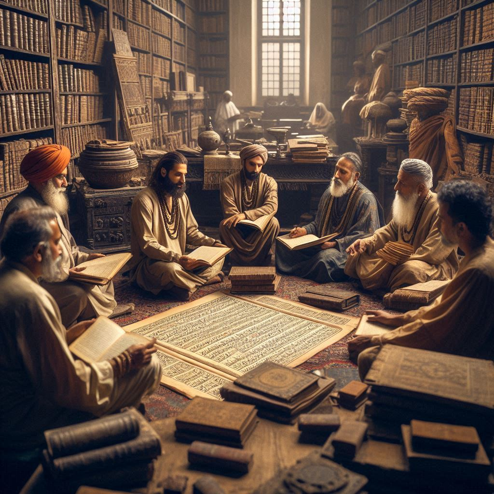
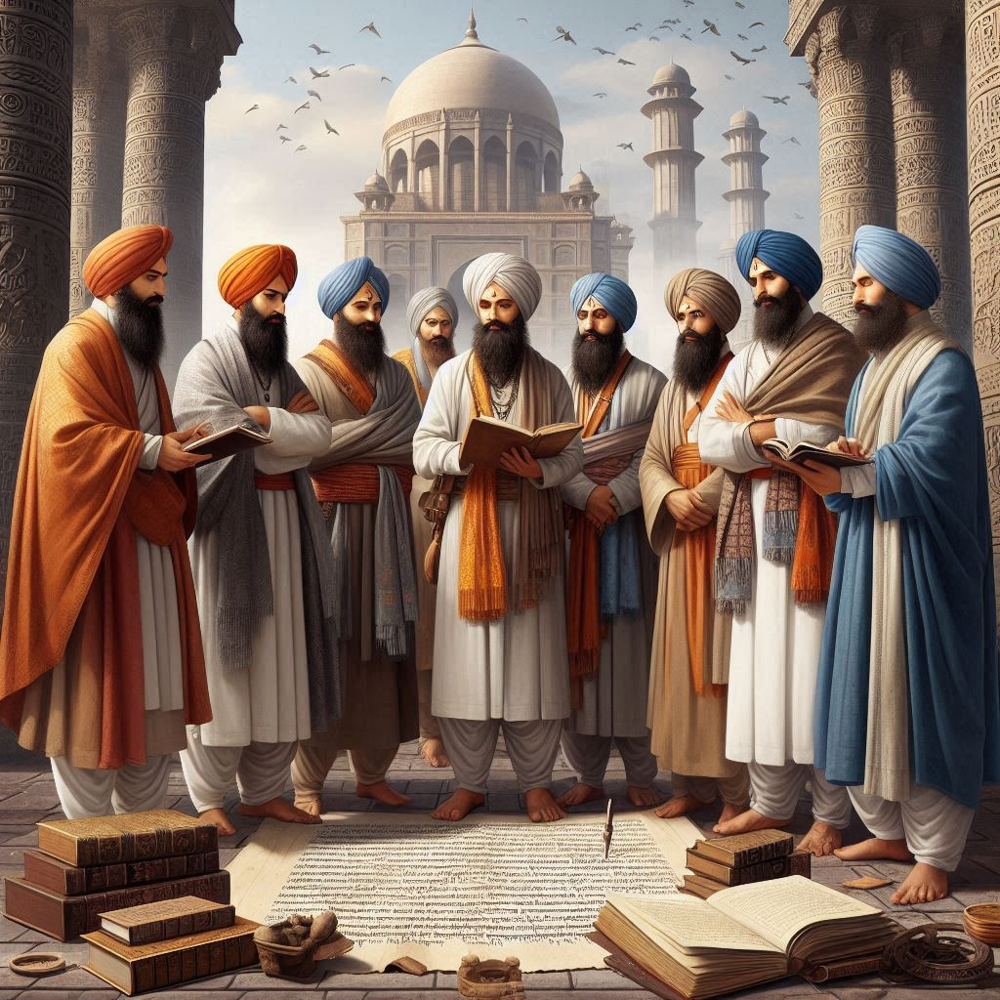

The history of Chandigarh is a fascinating narrative that intertwines the colonial era, post-independence
challenges, and modern urban development. Here’s an overview of the significant milestones in Chandigarh’s
history:
1. Pre-Colonial Period
Before the British colonization, the region where Chandigarh now stands was part of the
historical territories of the Punjab region. It was predominantly agrarian, inhabited by various
communities.
2. Colonial Era
In the early 20th century, the British established Chandigarh as a small town in the
Punjab province. The town was not initially significant and served as a military outpost and
administrative center.
3. Partition of India (1947)
The turning point in Chandigarh’s history came with the Partition of India in 1947. The
partition led to significant political and demographic changes, with Lahore (the then capital of Punjab)
becoming part of Pakistan. This necessitated the creation of a new capital for the Indian state of
Punjab.
4. Planning and Development
The Indian government, under the leadership of then-Prime Minister Jawaharlal Nehru,
sought to build a modern capital that reflected the aspirations of a newly independent nation.
In 1950, the French architect Le Corbusier was appointed as the chief architect of
Chandigarh. He envisioned the city as a model of modern urbanism, emphasizing functionality, green
spaces, and architectural harmony.
Le Corbusier, along with his team, designed the city’s layout, including its sectors, roads, and
prominent buildings. The city was planned in a grid pattern with sectors, each serving as self-contained
neighborhoods.
5. Inauguration and Urban Development
Chandigarh was officially inaugurated as the capital of Punjab in 1953. The first phase of
development focused on basic infrastructure, government buildings, and residential areas.
Over the years, Chandigarh grew rapidly, attracting people from various states due to its modern
amenities and job opportunities. It became a symbol of modernity and urban planning in India.
6. Union Territory
In 1966, the state of Punjab was reorganized, and Haryana was carved out as a separate state.
Chandigarh was declared a Union Territory, serving as the joint capital of both Punjab and
Haryana.


7. Cultural Growth and Education
The city became a center for education and culture, with the establishment of several prestigious
institutions, including the Punjab University, Post Graduate Institute of Medical Education
and Research (PGIMER), and National Institute of Technical Teachers Training and Research
(NITTTR).
Chandigarh also developed a rich cultural scene, with various art galleries, museums, and
theaters.
8. Modern Era
In the late 20th and early 21st centuries, Chandigarh continued to grow and modernize, facing
challenges like urbanization and infrastructure development. The city was recognized for its high
standard of living, cleanliness, and efficient governance.
Chandigarh has also become a hub for the IT industry, healthcare, and other sectors, further
enhancing its status as a modern metropolis.
9. Recognition
The city has received numerous accolades, including being selected as one of the Smart
Cities in India under the Smart Cities Mission and being recognized for its urban planning and
environmental sustainability.
Conclusion
Chandigarh’s history reflects the transformation from a colonial outpost to a modern urban
center, symbolizing India’s aspirations for development and progress. The city’s unique blend of modern
architecture, green spaces, and cultural diversity continues to make it an important landmark in India’s
journey post-independence.